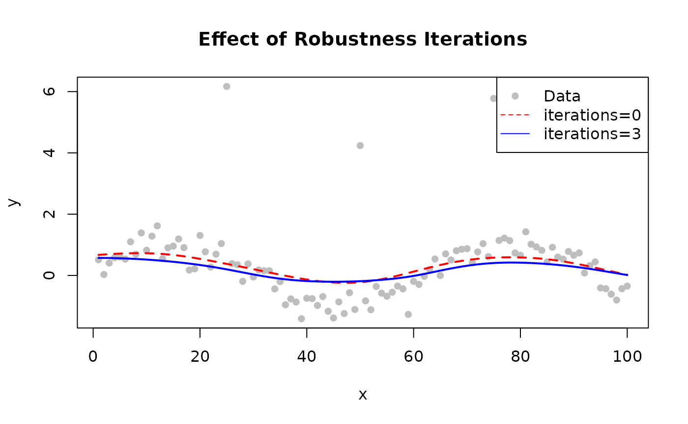

How Robustness Works
Standard LOWESS can be biased by outliers. Robustness iterations downweight points with large residuals:
- Fit initial LOWESS
- Compute residuals
- Assign robustness weights (large residuals → low weight)
- Refit using combined distance × robustness weights
- Repeat steps 2–4
Robustness Methods

Robustness method comparison

Effect of robustness iterations
Bisquare (Default)
Smooth downweighting. Points transition gradually from full weight to zero.
Use when: General purpose, balanced approach.
library(rfastlowess)
set.seed(42)
x <- seq(0, 2 * pi, length.out = 100)
y <- sin(x) + rnorm(100, sd = 0.3)
model <- Lowess(iterations = 3, robustness_method = "bisquare")
result <- fit(model, x, y)
cat("First 6 smoothed values (bisquare robustness):\n")
#> First 6 smoothed values (bisquare robustness):
print(head(result$y))
#> [1] 0.4862648 0.4942855 0.5026953 0.5114688 0.5205144 0.5296957Huber
Less aggressive than bisquare; still downweights outliers but keeps moderate residuals at reduced weight.
Use when: Mild outlier contamination; want to preserve moderate deviations.
Talwar
Hard thresholding — points above the threshold are excluded completely.
Use when: Known contamination that should be fully excluded.
model <- Lowess(iterations = 3, robustness_method = "talwar")
result <- fit(model, x, y)
cat("First 6 smoothed values (talwar robustness):\n")
#> First 6 smoothed values (talwar robustness):
print(head(result$y))
#> [1] 0.4606284 0.4670145 0.4736902 0.4805995 0.4876121 0.4945557Choosing the Number of Iterations
| Iterations | Effect | When to Use |
|---|---|---|
| 0 | No robustness (fastest) | Clean data, speed-critical |
| 1–3 | Moderate | Most applications |
| 4–6 | Strong | Data with clear outliers |
| 7+ | Very strong | Heavy contamination |
library(rfastlowess)
set.seed(42)
x <- 1:100
y <- sin(x / 10) + rnorm(100, sd = 0.3)
# Inject outliers
y[c(25, 50, 75)] <- y[c(25, 50, 75)] + 5
# Without robustness
model_0 <- Lowess(iterations = 0)
result_0 <- fit(model_0, x, y)
# With robustness
model_3 <- Lowess(iterations = 3)
result_3 <- fit(model_3, x, y)
plot(x, y, pch = 16, col = "gray", main = "Effect of Robustness Iterations")
lines(result_0$x, result_0$y, col = "red", lwd = 2, lty = 2)
lines(result_3$x, result_3$y, col = "blue", lwd = 2)
legend("topright", c("Data", "iterations=0", "iterations=3"),
pch = c(16, NA, NA), lty = c(NA, 2, 1),
col = c("gray", "red", "blue"))
Method Comparison
| Method | Handling | Best For |
|---|---|---|
"bisquare" |
Smooth to zero | General purpose |
"huber" |
Linear then downweights | Mild contamination |
"talwar" |
Hard threshold (0/1) | Severe point outliers |
Detecting Outliers
Use robustness weights to identify potential outliers:
library(rfastlowess)
set.seed(42)
x <- seq(0, 2 * pi, length.out = 100)
y <- sin(x) + rnorm(100, sd = 0.3)
y[c(20, 50, 80)] <- y[c(20, 50, 80)] + 5 # inject outliers
model <- Lowess(iterations = 5, return_robustness_weights = TRUE)
result <- fit(model, x, y)
for (i in seq_along(result$robustness_weights)) {
if (result$robustness_weights[i] < 0.05)
cat(sprintf("Point %d is likely an outlier (weight: %.3f)\n",
i, result$robustness_weights[i]))
}
#> Point 20 is likely an outlier (weight: 0.000)
#> Point 25 is likely an outlier (weight: 0.000)
#> Point 50 is likely an outlier (weight: 0.000)
#> Point 59 is likely an outlier (weight: 0.000)
#> Point 80 is likely an outlier (weight: 0.000)
sessionInfo()
#> R version 4.6.1 (2026-06-24)
#> Platform: x86_64-pc-linux-gnu
#> Running under: Ubuntu 24.04.4 LTS
#>
#> Matrix products: default
#> BLAS: /usr/lib/x86_64-linux-gnu/openblas-pthread/libblas.so.3
#> LAPACK: /usr/lib/x86_64-linux-gnu/openblas-pthread/libopenblasp-r0.3.26.so; LAPACK version 3.12.0
#>
#> locale:
#> [1] LC_CTYPE=C.UTF-8 LC_NUMERIC=C LC_TIME=C.UTF-8
#> [4] LC_COLLATE=C.UTF-8 LC_MONETARY=C.UTF-8 LC_MESSAGES=C.UTF-8
#> [7] LC_PAPER=C.UTF-8 LC_NAME=C LC_ADDRESS=C
#> [10] LC_TELEPHONE=C LC_MEASUREMENT=C.UTF-8 LC_IDENTIFICATION=C
#>
#> time zone: UTC
#> tzcode source: system (glibc)
#>
#> attached base packages:
#> [1] stats graphics grDevices utils datasets methods base
#>
#> other attached packages:
#> [1] rfastlowess_3.2.0
#>
#> loaded via a namespace (and not attached):
#> [1] digest_0.6.39 desc_1.4.3 R6_2.6.1 fastmap_1.2.0
#> [5] xfun_0.60 cachem_1.1.0 knitr_1.51 htmltools_0.5.9
#> [9] rmarkdown_2.32 lifecycle_1.0.5 cli_3.6.6 sass_0.4.10
#> [13] pkgdown_2.2.1 textshaping_1.0.5 jquerylib_0.1.4 systemfonts_1.3.2
#> [17] compiler_4.6.1 tools_4.6.1 ragg_1.5.2 bslib_0.12.0
#> [21] evaluate_1.0.5 yaml_2.3.12 otel_0.2.0 jsonlite_2.0.0
#> [25] rlang_1.3.0 fs_2.1.0 htmlwidgets_1.6.4